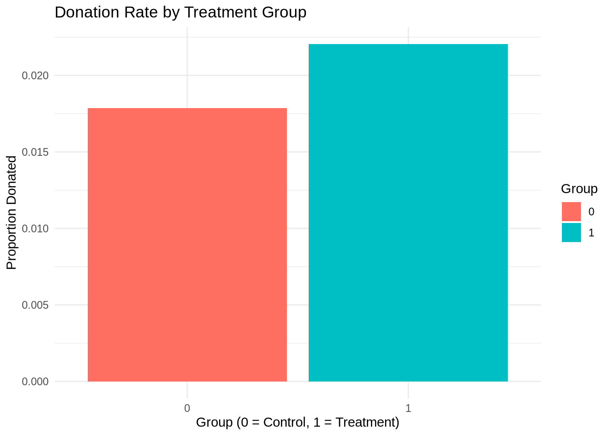

Dean Karlan at Yale and John List at the University of Chicago conducted a field experiment to test the effectiveness of different fundraising letters. They sent out 50,000 fundraising letters to potential donors, randomly assigning each letter to one of three treatments: a standard letter, a matching grant letter, or a challenge grant letter. They published the results of this experiment in the American Economic Review in 2007. The article and supporting data are available from the AEA website and from Innovations for Poverty Action as part of Harvard’s Dataverse.
In this experiment, Dean Karlan and John List wanted to understand what makes people more likely to donate to a cause, specifically, whether offering to match donations actually works. They mailed out 50,000 fundraising letters to past donors of a nonprofit, randomly assigning each recipient to one of a few different versions. Some people got a standard letter, while others were told their donation would be matched — either dollar-for-dollar (1:1), doubled (2:1), or tripled (3:1). A few versions also included different thresholds for how much the matching donor would contribute in total. By comparing how people responded across these groups, the researchers could see not just whether matching worked, but whether the size or structure of the match made a difference. As it would turn out, even just offering a match, any match, made people more likely to give.
This project seeks to replicate their results.
Data
Description
We begin by loading the dataset using the haven package, which allows us to read Stata .dta files into R. The dataset contains 50,083 observations, each representing an individual who received a fundraising letter. It includes information on treatment assignment, match ratios, suggested donation amounts, previous giving behavior, and demographic characteristics.
library(haven)library(dplyr)
Attaching package: 'dplyr'
The following objects are masked from 'package:stats':
filter, lag
The following objects are masked from 'package:base':
intersect, setdiff, setequal, union
treatment gave amount mrm2
Min. :0.0000 Min. :0.00000 Min. : 0.0000 Min. : 0.00
1st Qu.:0.0000 1st Qu.:0.00000 1st Qu.: 0.0000 1st Qu.: 4.00
Median :1.0000 Median :0.00000 Median : 0.0000 Median : 8.00
Mean :0.6668 Mean :0.02065 Mean : 0.9157 Mean : 13.01
3rd Qu.:1.0000 3rd Qu.:0.00000 3rd Qu.: 0.0000 3rd Qu.: 19.00
Max. :1.0000 Max. :1.00000 Max. :400.0000 Max. :168.00
NA's :1
female ask hpa
Min. :0.0000 Min. :0.000 Min. : 0.00
1st Qu.:0.0000 1st Qu.:0.000 1st Qu.: 30.00
Median :0.0000 Median :1.000 Median : 45.00
Mean :0.2777 Mean :1.334 Mean : 59.38
3rd Qu.:1.0000 3rd Qu.:2.000 3rd Qu.: 60.00
Max. :1.0000 Max. :3.000 Max. :1000.00
NA's :1111
Variable Definitions
Variable
Description
treatment
Treatment
control
Control
ratio
Match ratio
ratio2
2:1 match ratio
ratio3
3:1 match ratio
size
Match threshold
size25
$25,000 match threshold
size50
$50,000 match threshold
size100
$100,000 match threshold
sizeno
Unstated match threshold
ask
Suggested donation amount
askd1
Suggested donation was highest previous contribution
askd2
Suggested donation was 1.25 x highest previous contribution
askd3
Suggested donation was 1.50 x highest previous contribution
ask1
Highest previous contribution (for suggestion)
ask2
1.25 x highest previous contribution (for suggestion)
ask3
1.50 x highest previous contribution (for suggestion)
amount
Dollars given
gave
Gave anything
amountchange
Change in amount given
hpa
Highest previous contribution
ltmedmra
Small prior donor: last gift was less than median $35
freq
Number of prior donations
years
Number of years since initial donation
year5
At least 5 years since initial donation
mrm2
Number of months since last donation
dormant
Already donated in 2005
female
Female
couple
Couple
state50one
State tag: 1 for one observation of each of 50 states; 0 otherwise
nonlit
Nonlitigation
cases
Court cases from state in 2004-5 in which organization was involved
statecnt
Percent of sample from state
stateresponse
Proportion of sample from the state who gave
stateresponset
Proportion of treated sample from the state who gave
stateresponsec
Proportion of control sample from the state who gave
stateresponsetminc
stateresponset - stateresponsec
perbush
State vote share for Bush
close25
State vote share for Bush between 47.5% and 52.5%
red0
Red state
blue0
Blue state
redcty
Red county
bluecty
Blue county
pwhite
Proportion white within zip code
pblack
Proportion black within zip code
page18_39
Proportion age 18-39 within zip code
ave_hh_sz
Average household size within zip code
median_hhincome
Median household income within zip code
powner
Proportion house owner within zip code
psch_atlstba
Proportion who finished college within zip code
pop_propurban
Proportion of population urban within zip code
Balance Test
As an ad hoc test of the randomization mechanism, I provide a series of tests that compare aspects of the treatment and control groups to assess whether they are statistically significantly different from one another.
To assess the success of the randomization, we compare the treatment and control groups on a pre-treatment variable: mrm2, which represents the number of months since the last donation. If the randomization was effective, we would expect no significant differences between the two groups on this variable.
T-test for balance
t.test(mrm2 ~ treatment, data = df)
Welch Two Sample t-test
data: mrm2 by treatment
t = -0.11953, df = 33394, p-value = 0.9049
alternative hypothesis: true difference in means between group 0 and group 1 is not equal to 0
95 percent confidence interval:
-0.2381015 0.2107298
sample estimates:
mean in group 0 mean in group 1
12.99814 13.01183
The two-sample t-test yields a p-value of 0.9049, suggesting that there is no statistically significant difference between the treatment and control groups in terms of their recency of last donation.
Regression for balance
summary(lm(mrm2 ~ treatment, data = df))
Call:
lm(formula = mrm2 ~ treatment, data = df)
Residuals:
Min 1Q Median 3Q Max
-13.012 -9.012 -5.012 6.002 154.988
Coefficients:
Estimate Std. Error t value Pr(>|t|)
(Intercept) 12.99814 0.09353 138.979 <2e-16 ***
treatment 0.01369 0.11453 0.119 0.905
---
Signif. codes: 0 '***' 0.001 '**' 0.01 '*' 0.05 '.' 0.1 ' ' 1
Residual standard error: 12.08 on 50080 degrees of freedom
(1 observation deleted due to missingness)
Multiple R-squared: 2.851e-07, Adjusted R-squared: -1.968e-05
F-statistic: 0.01428 on 1 and 50080 DF, p-value: 0.9049
The linear regression confirms this result. The estimated coefficient on treatment is very small (≈ 0.014) and not statistically significant (p = 0.905), indicating that group assignment does not explain any meaningful variation in donation recency.
These results align with the balance checks shown in Table 1 of the original paper, which are included to assure readers that the random assignment created comparable groups. This gives us confidence that any differences observed in donation behavior later on can be attributed to the treatment itself.
Experimental Results
Charitable Contribution Made
First, I analyze whether matched donations lead to an increased response rate of making a donation.
# Proportion barplotprop_data <- df %>%group_by(treatment) %>%summarise(rate =mean(gave))ggplot(prop_data, aes(x =factor(treatment), y = rate, fill =factor(treatment))) +geom_bar(stat ="identity") +labs(x ="Group (0 = Control, 1 = Treatment)", y ="Proportion Donated", fill ="Group") +ggtitle("Donation Rate by Treatment Group") +scale_fill_manual(values =c("#FF6F61", "#00BFC4")) +theme_minimal()

This visual shows that the donation rate was noticeably higher among those who received a matching offer.
T-test and Linear Regression
We now formally test the difference in donation rates using both a two-sample t-test and a simple linear regression.
# T-testt.test(gave ~ treatment, data = df)
Welch Two Sample t-test
data: gave by treatment
t = -3.2095, df = 36577, p-value = 0.001331
alternative hypothesis: true difference in means between group 0 and group 1 is not equal to 0
95 percent confidence interval:
-0.006733310 -0.001627399
sample estimates:
mean in group 0 mean in group 1
0.01785821 0.02203857
# Linear regressionsummary(lm(gave ~ treatment, data = df))
Call:
lm(formula = gave ~ treatment, data = df)
Residuals:
Min 1Q Median 3Q Max
-0.02204 -0.02204 -0.02204 -0.01786 0.98214
Coefficients:
Estimate Std. Error t value Pr(>|t|)
(Intercept) 0.017858 0.001101 16.225 < 2e-16 ***
treatment 0.004180 0.001348 3.101 0.00193 **
---
Signif. codes: 0 '***' 0.001 '**' 0.01 '*' 0.05 '.' 0.1 ' ' 1
Residual standard error: 0.1422 on 50081 degrees of freedom
Multiple R-squared: 0.000192, Adjusted R-squared: 0.0001721
F-statistic: 9.618 on 1 and 50081 DF, p-value: 0.001927
Both approaches yield consistent results. The t-test produces a statistically significant p-value (~0.0013), and the regression confirms that being in the treatment group increases the likelihood of donating by about 0.4 percentage points. While this may seem small, it’s meaningful given the very low baseline donation rate (~1.8% in the control group). These results replicate Table 2a Panel A in the original paper and demonstrate that even a modest match offer has a real behavioral effect.
Probit Regression
To further validate the result, we run a probit regression where the dependent variable is gave and the independent variable is treatment.
summary(glm(gave ~ treatment, family =binomial(link ="probit"), data = df))
Call:
glm(formula = gave ~ treatment, family = binomial(link = "probit"),
data = df)
Coefficients:
Estimate Std. Error z value Pr(>|z|)
(Intercept) -2.10014 0.02332 -90.074 < 2e-16 ***
treatment 0.08678 0.02788 3.113 0.00185 **
---
Signif. codes: 0 '***' 0.001 '**' 0.01 '*' 0.05 '.' 0.1 ' ' 1
(Dispersion parameter for binomial family taken to be 1)
Null deviance: 10071 on 50082 degrees of freedom
Residual deviance: 10061 on 50081 degrees of freedom
AIC: 10065
Number of Fisher Scoring iterations: 6
The probit model returns a positive and statistically significant coefficient on the treatment variable, indicating that the matching offer significantly increases the probability of donating. This aligns with Table 3, Column 1 of the original study.
Differences between Match Rates
In this section, we explore whether the size of the matching ratio affects the likelihood of giving. Specifically, we test whether individuals were more likely to donate when offered a 2:1 or 3:1 match compared to a standard 1:1 match.
T-tests Between Match Ratios
We begin by running two pairwise t-tests: - The first compares donation rates between those offered a 1:1 match and those offered a 2:1 match. - The second compares 2:1 and 3:1 match groups.
# 1:1 vs 2:1t.test(df$gave[df$ratio2 ==1], df$gave[df$ratio ==1])
Welch Two Sample t-test
data: df$gave[df$ratio2 == 1] and df$gave[df$ratio == 1]
t = 0.96505, df = 22225, p-value = 0.3345
alternative hypothesis: true difference in means is not equal to 0
95 percent confidence interval:
-0.001942773 0.005711275
sample estimates:
mean of x mean of y
0.02263338 0.02074912
# 2:1 vs 3:1t.test(df$gave[df$ratio3 ==1], df$gave[df$ratio2 ==1])
Welch Two Sample t-test
data: df$gave[df$ratio3 == 1] and df$gave[df$ratio2 == 1]
t = 0.050116, df = 22261, p-value = 0.96
alternative hypothesis: true difference in means is not equal to 0
95 percent confidence interval:
-0.003811996 0.004012044
sample estimates:
mean of x mean of y
0.02273340 0.02263338
The p-values for both comparisons (0.33 and 0.96, respectively) suggest that differences in match ratios do not produce statistically significant changes in donation behavior. This supports the authors’ observation in the paper that while match presence boosts donations, increasing the match size offers diminishing returns.
Regression on Match Ratios
We also run a regression using indicator variables for 2:1 and 3:1 matches (with 1:1 match as the omitted baseline):
summary(lm(gave ~ ratio2 + ratio3, data = df))
Call:
lm(formula = gave ~ ratio2 + ratio3, data = df)
Residuals:
Min 1Q Median 3Q Max
-0.02273 -0.02263 -0.01902 -0.01902 0.98098
Coefficients:
Estimate Std. Error t value Pr(>|t|)
(Intercept) 0.0190151 0.0008525 22.306 <2e-16 ***
ratio2 0.0036183 0.0015945 2.269 0.0233 *
ratio3 0.0037183 0.0015948 2.332 0.0197 *
---
Signif. codes: 0 '***' 0.001 '**' 0.01 '*' 0.05 '.' 0.1 ' ' 1
Residual standard error: 0.1422 on 50080 degrees of freedom
Multiple R-squared: 0.0001644, Adjusted R-squared: 0.0001245
F-statistic: 4.117 on 2 and 50080 DF, p-value: 0.0163
The regression shows that being offered a 2:1 match increases the likelihood of giving by ~0.36 percentage points compared to a 1:1 match, while a 3:1 match increases it by ~0.37 points. Both coefficients are statistically significant at the 5% level. However, the practical effect sizes are small, and the increase from 2:1 to 3:1 is negligible — suggesting diminishing marginal returns to match size.
These calculations confirm the regression results. The response rate increases slightly from 1:1 to 2:1, and barely at all from 2:1 to 3:1. This aligns with the authors’ interpretation on page 8, where they suggest that the presence of a match matters more than its size.
Interpretation
The evidence here suggests that once donors are presented with a match, increasing the match ratio (from 1:1 to 2:1 to 3:1) does not substantially change behavior. This has important implications for nonprofits: just offering a match may be sufficient, and investing in larger match ratios might not yield proportionally better outcomes.
Difference in Response Rates
Finally, we compare raw response rates directly:
Size of Charitable Contribution
In this subsection, I analyze the effect of the size of matched donation on the size of the charitable contribution.
todo: Calculate a t-test or run a bivariate linear regression of the donation amount on the treatment status. What do we learn from doing this analysis?
todo: now limit the data to just people who made a donation and repeat the previous analysis. This regression allows you to analyze how much respondents donate conditional on donating some positive amount. Interpret the regression coefficients – what did we learn? Does the treatment coefficient have a causal interpretation?
todo: Make two plot: one for the treatment group and one for the control. Each plot should be a histogram of the donation amounts only among people who donated. Add a red vertical bar or some other annotation to indicate the sample average for each plot.
# Bivariate regressionsummary(lm(amount ~ treatment, data = df))
Call:
lm(formula = amount ~ treatment, data = df)
Residuals:
Min 1Q Median 3Q Max
-0.97 -0.97 -0.97 -0.81 399.03
Coefficients:
Estimate Std. Error t value Pr(>|t|)
(Intercept) 0.81327 0.06742 12.063 <2e-16 ***
treatment 0.15361 0.08256 1.861 0.0628 .
---
Signif. codes: 0 '***' 0.001 '**' 0.01 '*' 0.05 '.' 0.1 ' ' 1
Residual standard error: 8.709 on 50081 degrees of freedom
Multiple R-squared: 6.911e-05, Adjusted R-squared: 4.915e-05
F-statistic: 3.461 on 1 and 50081 DF, p-value: 0.06282
# Filter for donors onlydf_givers <- df %>%filter(gave ==1)# Regression on amount among giverssummary(lm(amount ~ treatment, data = df_givers))
Call:
lm(formula = amount ~ treatment, data = df_givers)
Residuals:
Min 1Q Median 3Q Max
-43.54 -23.87 -18.87 6.13 356.13
Coefficients:
Estimate Std. Error t value Pr(>|t|)
(Intercept) 45.540 2.423 18.792 <2e-16 ***
treatment -1.668 2.872 -0.581 0.561
---
Signif. codes: 0 '***' 0.001 '**' 0.01 '*' 0.05 '.' 0.1 ' ' 1
Residual standard error: 41.83 on 1032 degrees of freedom
Multiple R-squared: 0.0003268, Adjusted R-squared: -0.0006419
F-statistic: 0.3374 on 1 and 1032 DF, p-value: 0.5615
# Histogram for treatmentggplot(df_givers %>%filter(treatment ==1), aes(x = amount)) +geom_histogram(binwidth =10, fill ="steelblue") +geom_vline(aes(xintercept =mean(amount)), color ="red", linetype ="dashed") +labs(title ="Donation Amounts (Treatment Group)", x ="Amount", y ="Count") +theme_minimal()
# Histogram for controlggplot(df_givers %>%filter(treatment ==0), aes(x = amount)) +geom_histogram(binwidth =10, fill ="darkorange") +geom_vline(aes(xintercept =mean(amount)), color ="red", linetype ="dashed") +labs(title ="Donation Amounts (Control Group)", x ="Amount", y ="Count") +theme_minimal()
Simulation Experiment
As a reminder of how the t-statistic “works,” in this section I use simulation to demonstrate the Law of Large Numbers and the Central Limit Theorem.
Suppose the true distribution of respondents who do not get a charitable donation match is Bernoulli with probability p=0.018 that a donation is made.
Further suppose that the true distribution of respondents who do get a charitable donation match of any size is Bernoulli with probability p=0.022 that a donation is made.
Law of Large Numbers
to do: Make a plot like those on slide 43 from our first class and explain the plot to the reader. To do this, you will simulate 100,00 draws from the control distribution and 10,000 draws from the treatment distribution. You’ll then calculate a vector of 10,000 differences, and then you’ll plot the cumulative average of that vector of differences. Comment on whether the cumulative average approaches the true difference in means.
set.seed(123)ctrl <-rbinom(100000, 1, 0.018)treat <-rbinom(10000, 1, 0.022)diffs <- treat -sample(ctrl, 10000)cum_avg <-cumsum(diffs)/seq_along(diffs)plot(cum_avg, type ="l", col ="blue", ylab ="Cumulative Avg Diff", main ="LLN: Cumulative Difference", xlab ="Simulations")abline(h =0.004, col ="red", lty =2)
Central Limit Theorem
to do: Make 4 histograms like those on slide 44 from our first class at sample sizes 50, 200, 500, and 1000 and explain these plots to the reader. To do this for a sample size of e.g. 50, take 50 draws from each of the control and treatment distributions, and calculate the average difference between those draws. Then repeat that process 999 more times so that you have 1000 averages. Plot the histogram of those averages. Comment on whether zero is in the “middle” of the distribution or whether it’s in the “tail.”